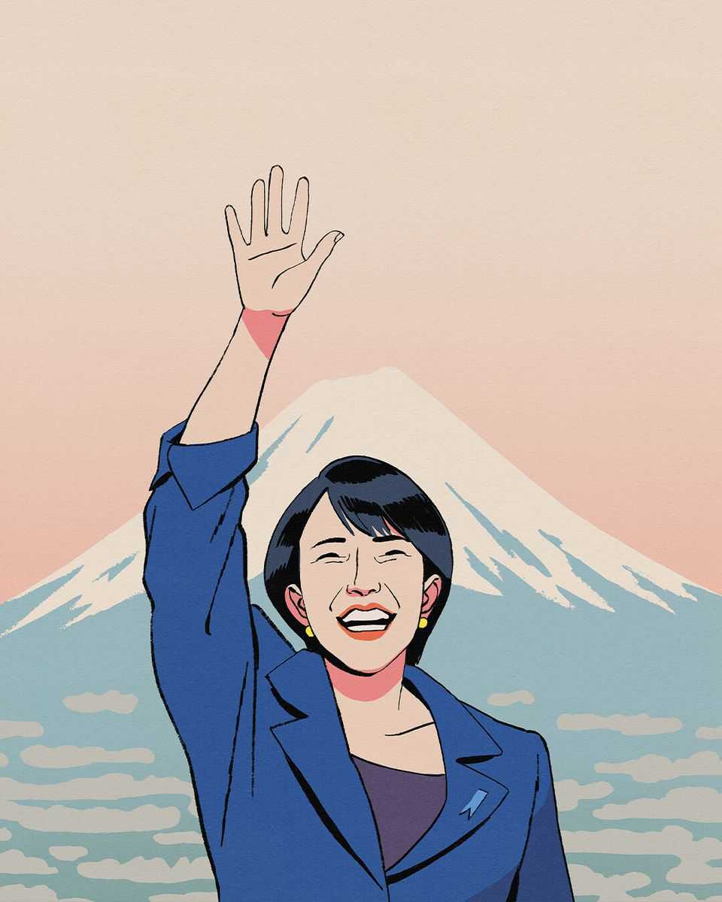

Leaders | Revitalising Japan

THE LIBERAL DEMOCRATIC PARTY (LDP) has dominated Japanese politics since its founding in 1955, ruling with only two brief interruptions. Never has it won as decisively as it did in a snap election on February 8th, when it took almost 70% of the seats in parliament’s powerful lower house. Takaichi Sanae, the triumphant prime minister, now has a historic chance to transform her country. She must not squander it.
To live up to the expectations that her electoral gamble and huge victory have created, Ms Takaichi needs to think bigger and broader. She cannot treat her time in office as routine, focused on short-term relief to ease the pain of today; she must take Japan’s long-term demographic and economic challenges head on. She should also recognise that her country has a crucial role to play as a stabilising force in a turbulent world. And she must be a leader for all of Japan, not only for her right-wing loyalists. She must, in short, gamble all over again.
She has the backing. Support for Ms Takaichi came from across the country. The LDP secured 316 seats in the 465-seat lower house, up from 198, giving it a two-thirds supermajority, which will allow it to override an upper house it does not control. Ms Takaichi tapped into Japanese voters’ desires for both security and change. She offered hard-nosed realism for a hard-edged era. She also personifies a break with the old guard. She is the plain-speaking child of a middle-class family, not the buttoned-up scion of a political dynasty, like many of her predecessors. And she is a woman, the first to lead democratic Japan.
A historic election unlocks historic opportunities—if Ms Takaichi is bold enough to seize them. Most critically, she is well placed to accelerate the transformation of Japan’s defences. The late Abe Shinzo, prime minister from 2012-20, began beefing up the armed forces in response to China’s assertiveness and America’s unreliability. But the world has changed faster than Japan. Ms Takaichi has already brought forward to the current fiscal year a planned increase in defence spending to 2% of GDP originally planned for 2027; but it is still not enough. Anyway, simply boosting budgets is only part of it. Japan needs a wholesale reckoning with the new world disorder. The prime minister’s willingness to break taboos, including talking about nuclear weapons, is healthy. She has the right ideas when it comes to unshackling the defence industry, encouraging defence innovation and enhancing the country’s intelligence capabilities.
This will require enterprising diplomacy. Like American allies elsewhere, Japan has been unsettled by Donald Trump’s return to the presidency. But, even more than the members of NATO, Japan cannot afford to alienate America. It is surrounded by nuclear-armed adversaries in China, Russia and North Korea and, for the moment, it relies on America’s nuclear umbrella. Ms Takaichi has done an admirable job of staying on Mr Trump’s good side (he even endorsed her before the vote). Yet even as Japan works with America, it should not hesitate to also work around America, as Abe did when he saved the Comprehensive and Progressive Agreement for Trans-Pacific Partnership (CPTPP) free-trade deal after Mr Trump abandoned it during his first term. That did not preclude Abe from having a warm relationship with Mr Trump. This time, Japan should spearhead efforts to link the CPTPP and the European Union, which would create a trade bloc covering over 30% of global output.
Japan will need to demonstrate this global leadership at a time when its domestic resources are strained. A shrinking, ageing population is the main drain on Japan’s growth. As many other countries are learning, there are no easy solutions. Families are not a production line that can easily be speeded up. Instead, demographic change, like climate change, requires constant adaptation. The thumping election victory gives Ms Takaichi the space to make hard choices others have so far ducked.
She should focus on unleashing the power of the people Japan has, and on making it more welcoming to newcomers. The social-security system needs urgent reforms. Firms should shift from rigid, seniority-based lifetime employment practices to more flexible job-based systems. Patriarchal family-law and tax structures that discourage marriage and keep women in low-paid work need to go. Japan should attract migrants, not demonise them. And as demands for spending on defence and welfare rise, Japan will have to reassure markets it can fund the programmes it needs. Now might be an opportune time to gradually take profits on overseas assets, in order to help reduce the gross debt.
Is Ms Takaichi up to the task? Having taken office in October, she is untested. She could misinterpret broad support as a licence to pursue her narrow ideological aims. An ardent nationalist, she might visit the Yasukuni Shrine, which honours Japan’s war dead, including its imperial leaders, some of whom were war criminals. That would inflame relations with China and wreck Japan’s fragile rapprochement with South Korea, essential to countering China’s rise. An arch social conservative, she could fan anti-foreigner sentiment, repelling the migrants Japan needs to help offset its shrinking population and the tourists who boost its economy. A fiscal dove, Ms Takaichi could pursue a big-spending agenda that fuels inflation and panics bondholders. One test will be a populist campaign promise to suspend an 8% sales tax on food for two years, all without issuing new debt. Although voters may have believed in such magical thinking, markets know better. She will need to find a way to pay for the giveaway, or scrap it.
The prime minister’s inbox is daunting. No wonder Japanese are anxious. Ms Takaichi asked voters if they wanted her to lead them through these tumultuous times. The answer was a resounding yes. But if she wastes her mandate on symbolism and populism, more corrosive alternatives will flourish. And Japan will not soon give another leader such a huge chance. ■
For subscribers only: to see how we design each week’s cover, sign up to our weekly Cover Story newsletter.